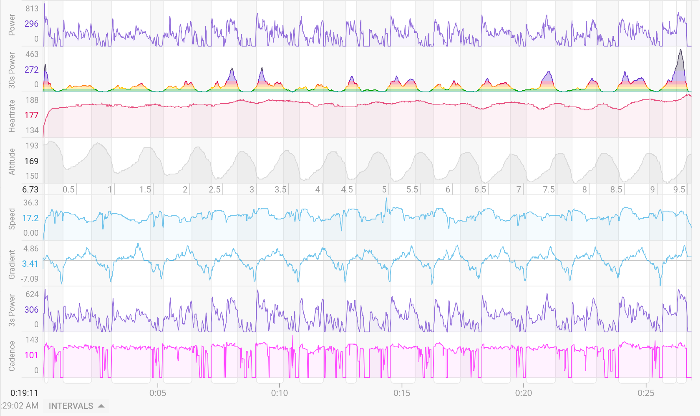
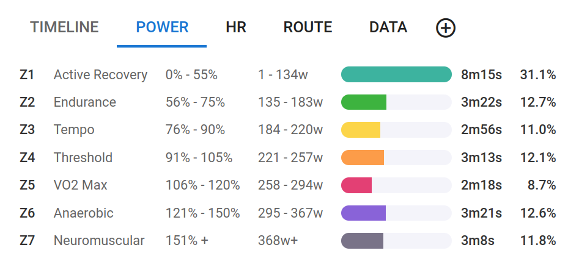

I first saw this type of chart on intervals.icu, and I like how it makes it easy to see the power for each section without needing to read off the number on hte y-axis. So I thought I'll recreate it from scratch while I was first learning D3.js! Since this was over 3 years ago, I did this without AI.
We'll focus on the 2nd chart from the top. It's a 30-second moving average of power data. The colors of the area under the curve are based off power zones, which can be found on the 2nd tab of their activity page.


In order to reproduce this power chart, we need two sets of data:
I can download my activity data from Garmin in a .fit format. I did all the data cleaning and processing in Python. In order to extract the power data from the .fit file, I used python-fitparse package.
import os
import re
from numpy import nan
import pandas as pd
import fitparse
Make sure you saved your .fit file in the same working directory. Here's how you would read it:
fitfile = fitparse.FitFile("19231612591_ACTIVITY.fit")
There's a bit of "manual" work required to extract the time series data:
# Create an empty list where we will append a dictionary for each time stamp in the data
data_parse = []
# Loop through data entries. File contains a "message" for each data entry it "receives" from the Garmin device.
for record in fitfile.get_messages('record'):
# Create an empty dictionary for each time stamp
data_row = {}
for data in record:
if not re.search('unknown_', data.name):
data_row[data.name] = data.value
data_parse.append(data_row)
Create 2 new columns which will be our x and y axes in the plot. Then export the
data as .csv which we'll read in with JavaScript.
raw_df["elapsed_time"] = raw_df.timestamp - raw_df.timestamp.iloc[0]
raw_df["smooth_power"] = raw_df["power"].rolling(30, center=True, min_periods=1).mean()
power_df = raw_df[["elapsed_time", "power", "smooth_power"]].copy().fillna(0)
power_df.to_csv("cycling_activity.csv", index=False)